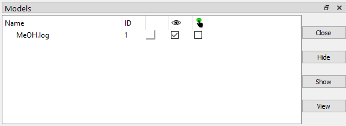

ChimeraX is a feature-rich application, but knowledge of all ChimeraX's utilities is not necessary to interact with SEQCROW's tools. This ChimeraX orientation will highlight a few of the ChimeraX things that are useful for SEQCROW users to be aware of.
A useful tidbit for this
page and other tutorials is that hyperlinks can run ChimeraX
commands. For SEQCROW tutorials, these links are styled like this:
help newTab open
ChimeraX has a good amount of documentation, much of which can be found on the menu (i.e. the way you got to SEQCROW's tutorials). But there are more ways to quickly access the documentation for a particular tool or command.
For tools, you can right click (or control+click if you only have one mouse button) on the tool to show a context menu. One of the options will be "Help". This will pull up the tool's documentation in the ChimeraX browser. If the help option is grayed out, the tool's developer hasn't added the documentation for it, but you might be able to find documentation elsewhere.
For commands, there is the help command. You can give this another command, and it will pull up the documentation in the browser or show you the usage in the Log tool.
If you want to see what features a 3rd party bundle adds, check the toolshed. All commands commands, tools, etc. that a bundle adds will be listed under the "Release History" tab on the bundle's page. Note that this is just a list - usage information is not necessarily on the toolshed.
There's a few ways to open a structure in ChimeraX:
The first two options allow you to open files using an interactive file explorer.
The open command can make use of a path to a file, but it can do a bit more than that.
If you run open 2v6a, it will open the structure for
PDB ID 2v6a. You can also open structures from a URL, other online databases, or from a SMILES string:
open smiles:CC=CCC=O
See
the ChimeraX documentation for more details on this.
Objects open in ChimeraX can be manipulated or measured using your mouse pointer.
By default, the left mouse button can rotate the view. You can also select atoms or other objects by control+clicking to set your selection to that object, or control+shift+clicking to toggle whether that object is selected. Selected items have a subtle green outline.
The default right mouse button will move the view side to side or up and down. You can change this to something else on the "Right Mouse" tab of the ChimeraX toolbar.
If you only have one mouse button, you can use command+click or Alt+click instead of right clicking.
Anything that appears in the ChimeraX graphics window will also appear on the
"Models" tool (model is the umbrella term for atomic structures, density maps,
surfaces, generic shape data, etc.).

The Models tool shows you the name of each model, its ID, color, whether it is visible, and whether it is selected. It also allows you to change the color of the entire model, hide or show the model, and select or deselect the entire model. The next section has more on the model ID. Some models will have children. For example, A coordination complex will likey have the atoms and bonds in the 'parent' model and a separate 'child' model for the coordination bonds. In these cases, there will be a small arrow next to the parent model. Clicking the arrow will show the model's children.
Every object shown in the graphics window has a specifier associated with it. These specifiers can be used to set the scope of a command or tool to certain atoms or models. Selectors are similar, but can be used to select atoms or parts of models meeting certain criteria. A good way to play around with these is the select command.
For an entire model, the specifier is "#<model ID>". For example, you can select a model with ID 1 with select #1.
An atom's specifier is "@<atom name>".
You can figure out an atom's name (or even its specifier, depending on your settings) by hovering your mouse over it.
For example, to select all atoms named "C1" across all models, run:
select @C1
If you only want to select atoms named "C1" on model #1, you can combine the atom specifier with the model specifier:
select #1@C1
These can get more advanced. For full details, see the ChimeraX documentation.
There are also "selectors" that can be invoked to select groups of atoms. These range in simplicity from element symbol to more complex things like functional groups. You can find selectors on ChimeraX's ribbon under "Select", though these work with the select command as well. For example, to select all carbons you can either:
There are also numerous functional group selectors in ChimeraX. SEQCROW expands this with related substituent selectors. These are under and , respectively.
There's also a "sel" selector, which is for the current selection.
This may be useful if it's faster to pick atoms by clicking on them than
to figure out what selectors or specifiers to use.
For example, you can select two atoms with your mouse and run:
distance sel
to print the distance between those atoms to the log.
You can save an image of ChimeraX's graphics window in a couple ways:
The and save command options are more flexible than snapshots. You can choose the image size, super sampling, and whether the background should be transparent (if the file type supports this).
You might want to look at the graphical presets that are available under to see if you like any of them. One thing worth noting: the selection outline will appear in any saved images. If you're trying to use the selection to make certain atoms or bonds stand out more, try using SEQCROW's highlight command instead.
You can change some default values in the ChimeraX settings. For example, you might want to change the default color of distance labels from yellow to black. These can be found under or (depending on your operating system) on the ChimeraX ribbon at the top of the screen. Explore these to discover what you might want to change. You will have to press , or else the changes won't stick.